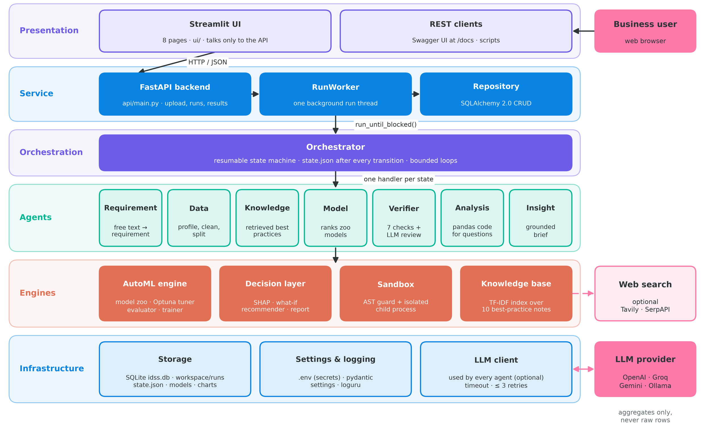
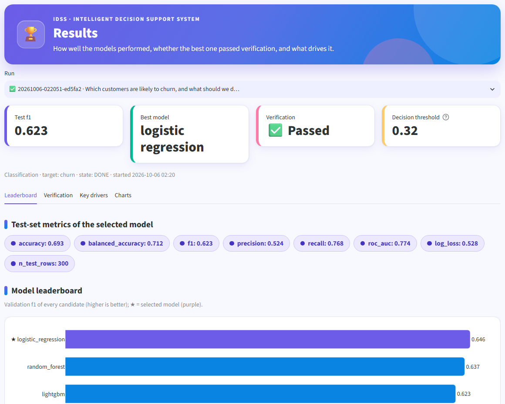
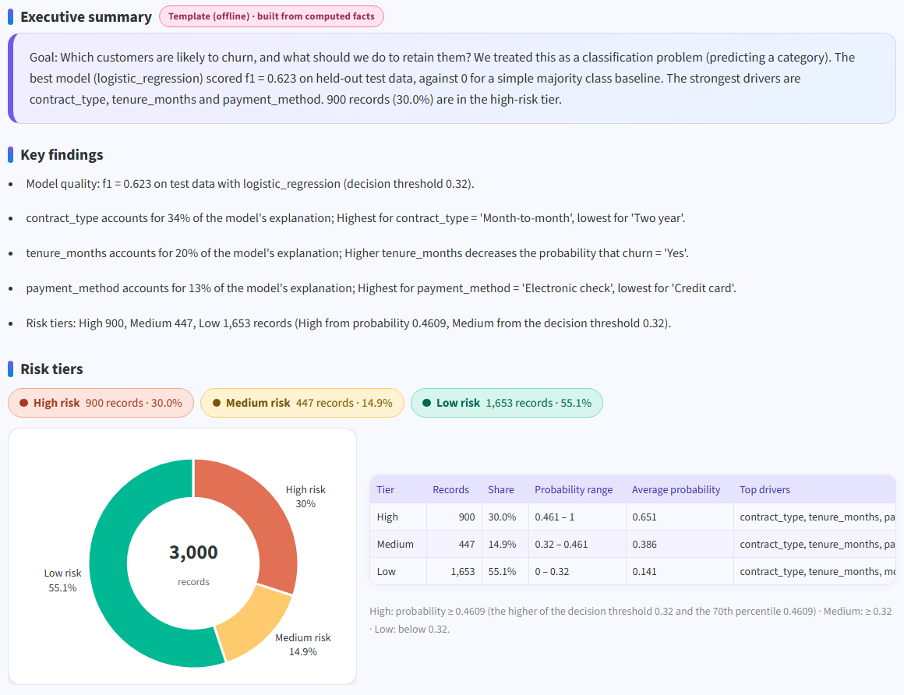

Problem Statement
Teams have questions and data but no data scientists. AutoML stops at a model, and LLM-written code can invent numbers.
Our idea: LLM agents plan and explain; tested code computes every number.
Objectives
- Understand plain-language questions
- Automate model search and tuning
- Verify every model before it is trusted
- Explain results and recommend actions
Proposed System6 layers · 7 agents · works offline

Methodologyresumable state machine · test split read exactly once
Upload
Requirement
Agent
Agent
Data
Agent
Agent
AutoML
(Optuna)
(Optuna)
Verifier
SHAP +
What-If
What-If
Insight
Agent
Agent
PDF
Report
Report
Key Features
Natural-language questions
AutoML with HPO
Multi-stage verification
Explainable AI (SHAP)
What-if & counterfactual recommendations
Grounded GenAI insights: no invented numbers
DashboardStreamlit UI on a FastAPI backend


Results5 synthetic datasets × 3 seeds · 14/15 verified
1.00SR
success rate
success rate
0.800NPS
performance
performance
0.900CS
overall score
overall score
93%Coverage
of the code
of the code
449Tests
automated
automated
Our model vsbaselinegain
Ablation – CS by setup
Threshold tuning lifts churn F1 from 0.561 to 0.649.
Technology Stack
Pythonscikit-learnXGBoost
SHAPLightGBMOptuna
FastAPISQLiteStreamlit
LLM (OpenAI-compatible)
Conclusion
IDSS turns a plain-language question and a table into a verified model and explained, actionable decisions.
Future Scope
- Studies on real data with users
- Benchmark the LLM path and its cost
- Causal, cost-aware recommendations